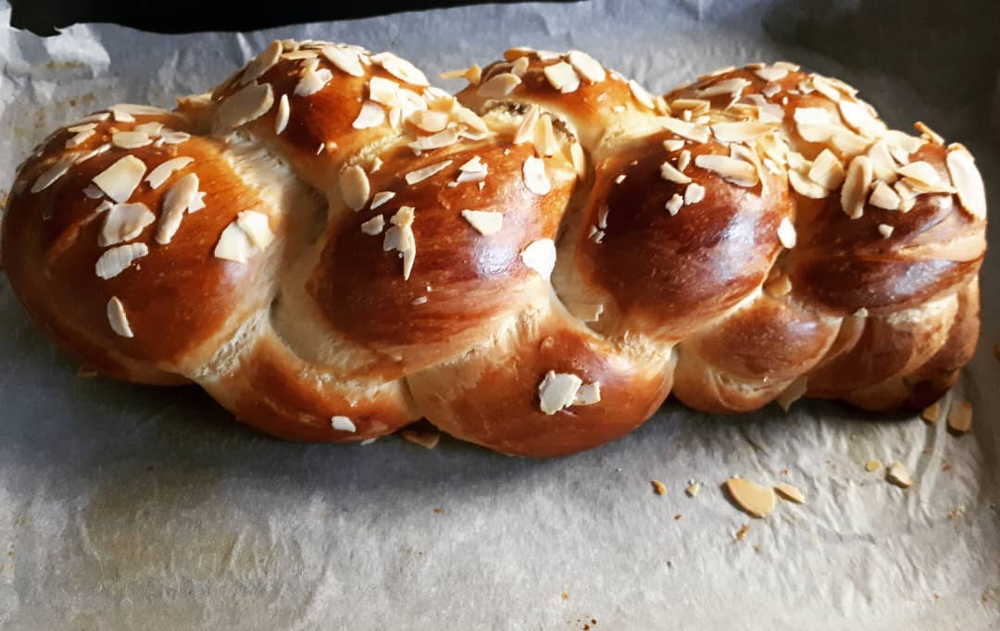

Vianočka
Sweet plaited bread
#sourdough
#sourdoughbreads
#sourdoughbread#lievitomadre #caputoflour #caputomanitoba #sourdoughbaking #kvaskovanie #vianocka #kvaskujem #pecenie#kvaskovani#kvaskovavianocka#sourdoughclub #sourdoughmania#pecieme#sourdoughsweets #peceni#bakery #homebakery#mulinocaputo